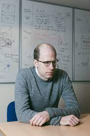

Ludwig Wittgenstein ne publia de son vivant qu’une œuvre majeure : le Tractatus logico-philosophicus, dont une première version parut en 1921 à Vienne. Dans cette œuvre influencée à la fois par la lecture de Schopenhauer et de Kierkegaard, et par Frege, Moore et Russell, Wittgenstein montre les limites du langage et de la faculté de connaître de l’être humain. Le Tractatus a donné lieu à de nombreuses interprétations, parfois difficilement conciliables. Alors que la signification mystique de ce texte est pour Wittgenstein éthique et esthétique, la plupart des lectures ont mis en avant son intérêt en logique et en philosophie du langage. C’est l’une des pièces majeures de la philosophie de Wittgenstein, il est inspiré par un logicisme anti-psychologiste, une position qu’il abandonna par la suite. Récemment, des études qui lui sont consacrées ont commencé à considérer l’aspect mystique de l’œuvre comme central. Wittgenstein pensa alors avoir apporté une solution à tous les problèmes philosophiques auxquels il était envisageable de répondre ; il quitta l'Angleterre et se détourna de la philosophie jusqu'en 1929. À cette date, il revint à Cambridge sur l’insistance de Bertrand Russell et George Moore, et critiqua les principes de son premier traité. Il développa alors une nouvelle méthode philosophique et proposa une nouvelle manière d’appréhender le langage, développée dans sa seconde grande œuvre, Investigations philosophiques, publiée, comme nombre de ses travaux, après sa mort. Cette autocritique sévère est rare dans l’histoire de la philosophie, voire quasi inexistante, faisant de Wittgenstein, au même titre que Platon, un exemple de remise en question de sa propre pensée.

La logique est le fondement des mathématiques : Russell est, avec Frege, l'un des fondateurs de la logique contemporaine. Son ouvrage majeur, écrit avec Alfred North Whitehead, a pour titre Principia Mathematica. À la suite des travaux d'axiomatisation de l'arithmétique de Peano, Russell a tenté d'appliquer ses propres travaux de logique à la question du fondement des mathématiques (cf. logicisme).
Il soutient l'idée d'une philosophie scientifique et propose d'appliquer l'analyse logique aux problèmes traditionnels, tels que l'analyse de l'esprit, de la matière (problème corps-esprit), de la connaissance, ou encore de l'existence du monde extérieur. Il est ainsi le père de la philosophie analytique. Jules Vuillemin le fera connaître en France.
Il écrit des ouvrages philosophiques dans une langue simple et accessible, en vue de faire partager sa conception d'une philosophie rationaliste œuvrant pour la paix et l'amour. Il s'engage dans de nombreuses polémiques qui lui valent le qualificatif de « Voltaire anglais » ou de « Voltaire du XXe siècle », défend des idées proches du socialisme de tendance libertaire et milite également contre toutes les formes de religion, considérant qu'elles sont des systèmes de cruauté inspirés par la peur et l'ignorance. Il organise le tribunal Sartre-Russell contre les crimes commis pendant la guerre du Viêt Nam.
Son œuvre, qui comprend également des romans et des nouvelles, est couronnée par le prix Nobel de littérature en 1950, en particulier pour son engagement humaniste et comme libre penseur. Enfin, il devient membre du Parlement britannique.

Dans un article célèbre, Bostrom démontre que s'il est possible de simuler des planètes habitées entières ou des univers même entiers, il est très probable que nous vivions dans une simulation informatique. Son raisonnement est le suivant : il est probable que dans le futur, notre civilisation atteindra un niveau de technologie tel qu'elle pourra créer des simulations informatiques extrêmement sophistiquées des esprits humains et des mondes où habiter. Un simple ordinateur portable pourrait être l'habitation de milliers d'esprits simulés. Aussi, selon toute probabilité, les esprits simulés seront rapidement plus nombreux que les esprits biologiques. Les expériences des esprits biologiques et des esprits simulés seront impossibles à distinguer et tous ces esprits penseront évidemment qu'ils ne sont pas simulés, mais les derniers seront en fait trompés. Or qu'est-ce qui peut nous prouver que nous n'appartenons pas déjà à un de ces mondes simulés ? Rien et selon Bostrom il est donc très probable que nous soyons dans cette situation.